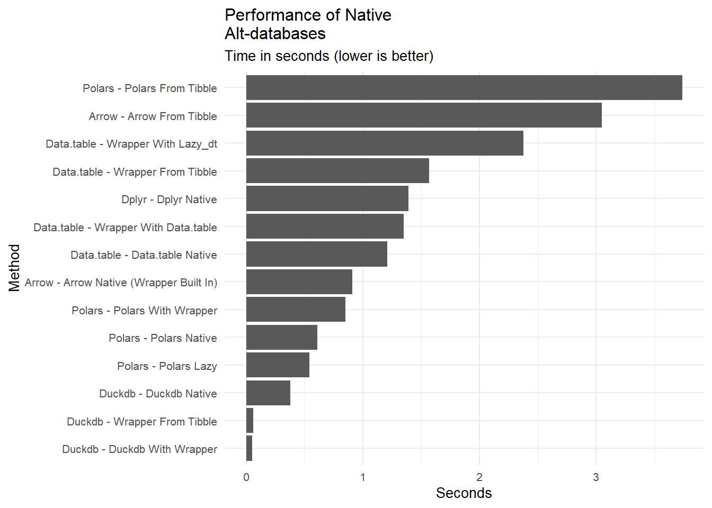
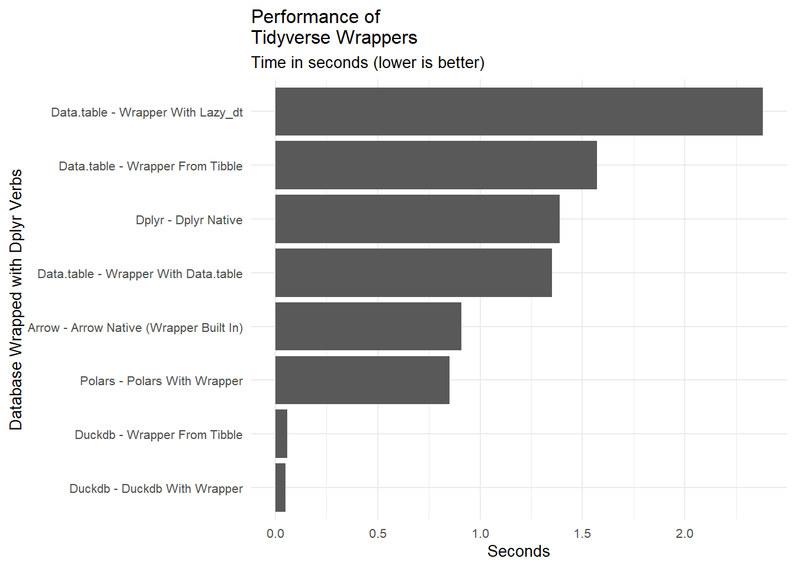

I love the Tidyverse from Posit.co. The biggest evolution of the R language ecosystem since its inception was the introduction of dplyr and, subsequently, dozens of related packages. dplyr established what is, in effect, a new vernacular for manipulating data frames that is supremely readable. This is not welcome by everyone. Critics perfer the more concise expressions in base R. Consider two snippets of code that summarize a column of numbers, the first in base R and the second using dplyr.
# base Rdf <-tibble(city =c("NY", "NY", "LA", "LA", "LA"),temp =c(70, 80, 90, 100, 110))do_base <-function(df) { agg_lines <-aggregate(temp ~ city, data = df,FUN =function(x) c(avg=mean(x),high=max(x),low=min(x)))# convert matrix column to data frame columnscbind(city=agg_lines$city,as.data.frame(agg_lines$temp))}
The first example is hard to decipher while the second is quite understandable without even knowing what the purpose of the function is. As it happens, dplyr is also usually faster than base R by a fair amount.
The Need for Speed
As we start working with larger and larger datasets, the basic tools of the tidyverse start to look a little slow. In the last few years several packages more suited to large datasets have emerged. Some of these are column, rather than row, oriented. Some use parallel processing. Some are vector optimized. Speedy databases that have made their way into the R ecosystem are data.table, arrow, polars and duckdb. All of these are available for Python as well. Each of these carries with it its own interface and learning curve. duckdb, for example is a dialect of SQL, an entirely different language so our dplyr code above has to look like this in SQL:
result <-dbGetQuery( con,"SELECT city, AVG(temp) as avg, MIN(temp) as low, MAX(temp) as high FROM duck_df GROUP BY city")
It’s pretty readable but if you don’t know the lingo, translating will slow you down. Fear not! Help is at hand. Everyone of these database packages has a dplyr vernacular wrapper. This is a huge convenience. You can write the readable dplyr code and it just works (mostly). Switching between and testing all of these databases requires only minor changes in your code.
Note
Future code snippets in this article are hidden by default. Click on the “Code” button wherever you see it to make source code visible.
When looking at these alt-databases you may be tempted to simply ask “which is fastest?” This is not a simple question. The answer will depend on the size of the dataset, the nature of the manipulations, and the hardware you are using. You can get a sense of the relative speeds by looking at these comprehensive benchmarks.
If you want to continue to use the tidyverse vernacular, the question changes. It’s not “which is fastest,” but “which is fastest using the dplyr syntax?” The answer, as it turns out, is very different for the second question.
The dplyr wrappers are not a free lunch. There are two sources of overhead that mean the dplyr code should be slightly slower than using the native interface. First, the dataset, which might start out as a typical R data frame, must be converted into the target database format. Second, some time must be taken to convert the dplyr code to the target database code. Obviously, if your dataset is already in the file format of the database package, the first issue goes away.
In this experiment we will address three questions.
How much faster (if at all) are the “alt-database” packages than the Tidyverse dplyr package. We use the native data frame format throughout the pipeline.
How much of a performance hit do we take if we use the Tidyverse wrappers to analyze alt-database data sets, still using the native format.
Suppose we want to work with Tidyverse R data frames (e.g. tibbles). Do the alt-database engines still give us a speed benefit if we include the time to convert tibbles into an alt-database format before doing typical manipulations.
Make the Data Set
We will use the TPC-H query dataset. This is a standard dataset used to benchmark databases. It is a set of tables that represent a fictional company’s operations. You can learn more about it here. For this project we will use the lineitem table which has 16 columns, 12 million rows of mixed types and is about 1 GB in size. Since it is included with the duckDB package we can generate it from there. We start all tests with a tibble object.
As a cautionary note, the manipulations we are doing, grouping, computing and summarizing, may or may not show off any particular approach to its best advantage. Your mileage may vary. Feel free to quibble.
Code
duckdb:::sql("DROP TABLE IF EXISTS lineitem")
data frame with 0 columns and 0 rows
Code
tidy_df <-as_tibble(duckdb:::sql("INSTALL tpch; LOAD tpch; CALL dbgen(sf=2); FROM lineitem;"))duckdb:::sql("DROP TABLE IF EXISTS lineitem")
Now we can process this data set using each of the database packages using both the native interface and the dplyr wrapper. We want to know which database is fastest and what the performance loss is from using the wrapper. First let’s establish that base R is not in the running by comparing it to the default of dplyr, using the code already shown above and a subset of the data.
Code
# Since tidypolars does not support as.Date or see local variables # we put this outside the dplyr# pipeline as a global variable. # This wont affect the results of any other database packagecutoff_date <-as.Date("1998-09-02")#quicky function to clean up benchmark results. Show only median seconds to process.qbench <-function(mb_result,round=2){# extract the median time in seconds mb_result |>group_by(expr) |>summarize(seconds =round(median(time)/1e9,round))}
# Later we will use this with other engines.do_dplyr <-function(.data) { .data |>select(shipdate, returnflag, linestatus, quantity, extendedprice, discount, tax) |>filter(shipdate <= cutoff_date) |>select(returnflag, linestatus, quantity, extendedprice, discount, tax) |>summarise(sum_qty =sum(quantity),sum_base_price =sum(extendedprice),sum_disc_price =sum(extendedprice * (1- discount)),sum_charge =sum(extendedprice * (1- discount) * (1+ tax)),avg_qty =mean(quantity),avg_price =mean(extendedprice),avg_disc =mean(discount),count_order =n(),.by =c(returnflag, linestatus) ) |>arrange(returnflag, linestatus)}
Code
small_df <- tidy_df[1:1e7,]base_bm <-microbenchmark(do_base(small_df),do_dplyr(small_df),times =1,unit ="seconds") |>qbench()# clean up after ourselves so further tests get the same memory to work withrm(small_df)invisible(gc)
Code
base_bm|>gt()
expr
seconds
do_base(small_df)
14.14
do_dplyr(small_df)
0.98
dplyr is much faster than base R and the code is much cleaner. I’m less fluent in base R than dplyr. The base code looks pretty ugly. You may be able to write more concise base R code than I can but I don’t think you can speed it up much. How does dplyr stack up against the competition?
data.table
First up is the venerable data.table and the Tidyverse companion dtplyr. This has been around a long time and is the R community’s first choice when speed is needed. The key to data.table’s speed is adding a key to the data set. This makes grouping and rowwise lookups more efficient. The dtplyr package wraps it with dplyr syntax. If we are working with data.table objects throughout our workflow we an also see the performance effect of code translation when using dplyr verbs.
In the benchmark timings, the first row is the time taken to process a data.table natively. The second row is the time taken to run the dtplyr code on a native data.table. The third row shows the time taken by dtplyr to process a lazy data.table object. The fourth row include the time to convert a tibble to a data.table and then using the dplyr verbs from dtplyr. Finally, as a control, we see the time taken to run the dplyr code on a tibble.
Code
dt_df <-as.data.table(tidy_df,key =c("returnflag","linestatus"))dt_df_lazy <-lazy_dt(dt_df)do_data.table <-function(df = tidy_df, use_wrapper =FALSE) { cl <-class(df)if ("data.table"%in%class(df)) {if (!use_wrapper) { # use data.table syntax temp <- df[shipdate <=as.Date("1998-09-02"), .(sum_qty =sum(quantity),sum_base_price =sum(extendedprice),sum_disc_price =sum(extendedprice * (1- discount)),sum_charge =sum(extendedprice * (1- discount) * (1+ tax)),avg_qty =mean(quantity),avg_price =mean(extendedprice),avg_disc =mean(discount),count_order = .N ) , by = .(returnflag, linestatus)] } else { # use dtplyr syntax with a data.table temp <- df |>do_dplyr() } } else{ # start with a tibble temp <- df |>as.data.table() |>do_dplyr() }return(temp)}bm_dt <-microbenchmark(do_data.table(dt_df,use_wrapper =FALSE),do_data.table(dt_df,use_wrapper =TRUE),collect(do_dplyr(dt_df_lazy)),do_data.table(tidy_df,use_wrapper =TRUE),do_dplyr(tidy_df),times=10,unit="seconds") |>qbench() |>mutate(engine =c(rep('data.table',4),'dplyr'),expr =c("data.table native","wrapper with data.table","wrapper with lazy_dt","wrapper from tibble","dplyr native"),.before ="seconds")rm(dt_df_lazy)rm(dt_df)invisible(gc)bm_dt |>gt()
expr
engine
seconds
data.table native
data.table
1.21
wrapper with data.table
data.table
1.35
wrapper with lazy_dt
data.table
2.38
wrapper from tibble
data.table
1.57
dplyr native
dplyr
1.39
The surprise here is just how fast dplyr has become. It is only a bit slower than data.table on this data set. Fortunately, the dtplyr wrapper adds only a minimal time penalty. You should not worry too much about performance hits when using dtplyr.
You may be tempted to use “lazy evaluation” with data.table but be careful. This is where you accumulate all the query operations and run them only when collect() is called. This is a good idea if you are working with many intermediate steps but the collect() step incurs a substantial time penalty.
Arrow
Next up is Arrow. This is a columnar database from Apache. It uses a matching file format called parquet. This is a very efficient way to store data and is designed from the ground up to handle datasets larger than can fit in memory (but that is beyond the scope of this analysis). What’s nice is that the arrow R package already has a dplyr interface as it’s native interface! There is no separate package to translate dplyr verbs to a different arrow syntax.
We see a nice speedup over the previous methods although only when we start out in the arrow format. The overhead of converting a standard data frame to an arrow table is significant. So if you want to use arrow you’ll be right at home with the dplyr syntax but you should use, store and retrieve your data in native the arrow object and parquet file formats.
Polars
Moving on to a database that’s made a real splash in the Python community, polars. There is an R version, although it’s not on CRAN so you have to install it from here. The arrow companion is here.
Polars uses the same columnar format as Arrow, but Polars has a secret weapon in that it does parallel processing by default. This is a big advantage when working with large data sets. Setup time for multi-threading is non-trivial so it really only shines on large data sets. Don’t worry. It all happens in the background. You don’t have to lift a finger.
Pretty speedy! We’ve reduced time shown by arrow. Unfortunately the tidypolars wrapper increases the processing time by roughly 40% which puts us in the same ballpark as arrow. You will have to decide for yourself whether the frankly odd syntax of native polars is worth the speedup.
As with other database engines, the overhead in converting an R data frame to polars is considerable. We are much better off if we start out with a polars data frame or stay in that format after converting once. If you want to use polars end-to-end, the file format that matches the in-memory structure of a polars data frame is the Apache parquet format also contained in the arrow package. There are no read/write functions in tidypolars so to read and write parquet files with polars, use the read_parquet() function and <data frame>$write_parquet method from the polars package. Reading is a function while writing is a method. I don’t like this inconsistency.
Note the use inclusion of a ‘lazy’ data frame in the test. Delaying query execution until all operations have been planned speeds things up a wee bit.
Tip
Polars for R is pretty new so both the native package and tidypolars are works in progress.
Important base R functions, like as.Date() are not yet supported in a tidypolars pipeline. That’s why we had to declare our date as a global variable before we could use in filter().
Coverage of dplyr verbs is not 100%. If you do a anything beyond basic functions in mutate() you will have to “roll your own” Polars function. The syntax of the native version in R is “pythonic,” so it prefers object methods over functions. As an R user, I found it very awkward.
As an example, there are several lubridate functions in tidypolars but the yearqtr type is not supported. Suppose we want to convert a date column to a year and quarter. We can create our own function that returns valid Polars code that can be used in a tidypolars::mutate() call.
# A tibble: 3 × 2
date yrqtr
<date> <chr>
1 2022-01-01 2022Q1
2 2022-05-02 2022Q2
3 2022-12-03 2022Q4
There is a great Polars cookbook by Damien Dotta for R users here which shows many side-by-side comparisons of dplyr and polars syntax. I urge you to refer to it for help with translating your code into native polars if you choose to go that route.
duckDB
Our final contender is duckdb with duckplyr. This is a relational database that supports “Structured Query Language” (SQL). SQL is easy to read but very different from R. Also, you first establish a connection to the database and work with the connection, not the data frame. duckplyr to the rescue. The speed boost comes from a columnar-vectorized query execution engine.
Code
duck_df <-as_duckplyr_df(tidy_df)do_duckdb <-function(df = tidy_df, use_wrapper =FALSE) {# duckdb_register(con, "duck_df",overwrite = TRUE, orig_df)if (use_wrapper) {if ("duckplyr_df"%in%class(df)) {# df was converted outside of function result <- df |>do_dplyr()return(result) } else {# convert df to duck right now result <-as_duckplyr_df(df) |>do_dplyr()return(result) } } else { con <-dbConnect(duckdb::duckdb(), ":memory:")duckdb_register(con, "duck_df_native", overwrite =TRUE, df)# achieve the same result with dbGetQuery result <-dbGetQuery( con,"SELECT returnflag, linestatus, sum(quantity) as sum_qty, sum(extendedprice) as sum_base_price, sum(extendedprice*(1-discount)) as sum_disc_price, sum(extendedprice*(1-discount)*(1+tax)) as sum_charge, avg(quantity) as avg_qty, avg(extendedprice) as avg_price, avg(discount) as avg_disc, count(*) as count_order FROM duck_df_native WHERE shipdate <= make_date(1998,12,1) GROUP BY returnflag, linestatus ORDER BY returnflag, linestatus" )dbDisconnect(con, shutdown =TRUE)rm(con) }return(result)}# count(*) as count_order FROM duck_df_native,bm_duckdb <-microbenchmark(do_duckdb(duck_df, use_wrapper =FALSE),do_duckdb(duck_df, use_wrapper =TRUE),do_duckdb(tidy_df, use_wrapper =TRUE),times =10,unit ="seconds") |>qbench() |>mutate(engine ='duckdb',expr =c("duckdb native","duckdb with wrapper","wrapper from tibble"),.before ="seconds")rm(duck_df)invisible(gc)bm_duckdb |>gt()
expr
engine
seconds
duckdb native
duckdb
0.38
duckdb with wrapper
duckdb
0.05
wrapper from tibble
duckdb
0.06
This is an amazing result! duckDB blows all the other engines out of the water. Further, there is essentially no overhead to using the wrapper nor is there a penalty for using a tibble at the start of the pipeline. We did not have to make any concessions to the particulars of duckDB in our dplyr pipeline other than adding as_duckplyr_df() at the start.
I am at a loss to explain why the native SQL version of the pipeline so much slower than duckplyr version. Perhaps the duckplyr package is doing some optimization that we are not aware of. Maybe its SQL translation is better than mine.
Important
Do not use group_by() in your pipeline to group summaries. It will cause duckplyr to fall back to using dplyr and lose any speed advantage. Instead, use the .by= parameter in summarise(). So this
Factor data types are not supported. Convert factors with as.character() before using them in a duckplyr pipeline.
Conclusion
First, let’s throw out a couple caveats. The summary statistics we are calculating are very simple. If you are doing something more complex, the results may be different. I urge you do to your own tests. Further, the data set is all in memory. If you are working with data on disk, the results may be different. Coverage of the Tidyverse is not complete for all these wrappers. Some of your data wrangling pipelines may not work.
With the notable exception of duckplyr, the time required to convert a standard R data frame to the format used by any of these alt-database engines is significant. You should make the conversion once in your data manipulation pipeline, then stay in the more efficient format until it’s time to present the results with something like ggplot.
Now let’s summarize alt-database engines the way you would typically see them benchmarked, using their native interfaces and data frame formats.
Code
bm <-rbind(bm_dt, bm_arrow, bm_polars, bm_duckdb) |>mutate(method =str_to_title(paste(engine,"-",expr)))bm |>ggplot(aes(x =fct_reorder(method,seconds), y = seconds)) +geom_col() +coord_flip() +labs(title ="Performance of Native\nAlt-databases",subtitle ="Time in seconds (lower is better)",x ="Method", y ="Seconds") +theme_minimal() +theme(text =element_text(size =10))

It looks like duckdb offers significant speed advantages all other engines.
As mentioned at the beginning, there is more to the story for a tidyverse user. Note how the rankings change when we use the dplyr wrappers. Polars, which is among the faster engines, is among the slowest when using the dplyr wrapper.
Since this post is for people who are interested in speeding up R database operations AND who prefer using Tidyverse syntax, let’s summarize the performance of the four contenders using their Tidyverse wrappers around the native data frame formats. Remember, this is not showing which database is fastest. It is showing which database is fastest when using Tidyverse syntax.
Code
bm |>filter(str_detect(expr,"wrapper|dplyr")) |>ggplot(aes(x =fct_reorder(method,seconds), y = seconds)) +geom_col() +coord_flip() +labs(title ="Performance of\nTidyverse Wrappers",subtitle ="Time in seconds (lower is better)",x ="Database Wrapped with Dplyr Verbs", y ="Seconds") +theme_minimal() +theme(text =element_text(size =10))

The clear winner is duckDB. It is about 10 times faster than the nearest alternative. It requires no special handling in the pipeline other than the initial conversion to the duckdb format which takes very little time. Furthermore, most other engines wind up doing worse than good old dplyr when using their dplyr wrappers.
Should you always use an alt-database?
All of these databases are optimized for certain things but they all come with overhead. On small datasets it’s not worth it. At what point does the dataset size make using duckDB faster than dplyr? Let’s find out.
DuckDB underperforms dplyr only when the data set is less than ten thousand rows. Since the absolute execution time is so low with small datasets using either engine, we won’t notice the difference. To my mind that argues for using duckDB all the time. The only “gotcha” is that some dplyr verbs are not supported by duckDB. The good news is that duckplyr automatically drops back to dplyr when it encounters an unsupported verb or function. So we have nothing to lose! This fail-safe mode is unique to duckplyr. It gets even better. If you choose to use duckplyr for everything simply call duckplyr::methods_overwrite() at the start of your session which enables processing with duckdb for all data frames.
There are infinite combinations of hardware, data structures and processing pipelines possible and you may find a different result in your work. I am grateful for any comments, criticisms or observations you may have. Thanks for reading!